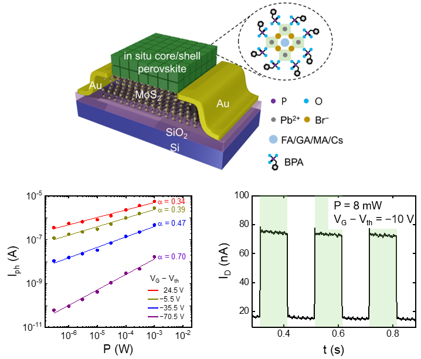
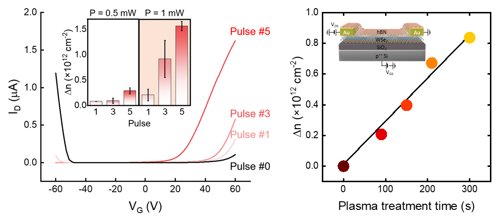
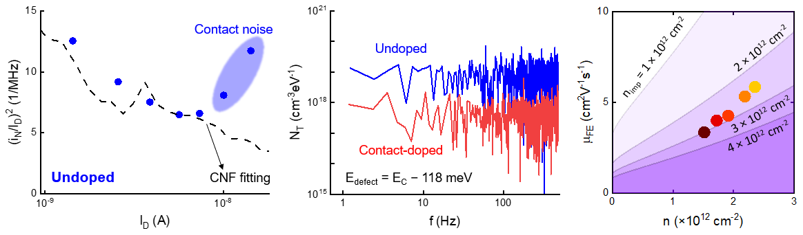

Research
2D Electronics & Optoelectronics
Two-dimensional (2D) semiconductors provide a platform for compact electronic and optoelectronic devices. Their electronic and optical properties can be tuned through electrical control and integration with other materials, offering opportunities to tailor device functionality.

- Jinwoo Sim†, Sunggyu Ryoo†, Joo Sung Kim†, Juntae Jang, Heebeom Ahn, Donguk Kim, Joonha Jung, Taehyun Kong, Hyeonmin Choi, Yun Seog Lee, Tae-Woo Lee*, Kyungjune Cho*, Keehoon Kang*, and Takhee Lee*, “Enhanced Photodetection Performance of an In Situ Core/Shell Perovskite-MoS2 Phototransistor,” ACS Nano, 18, 16905–16913 (2024). DOI: 10.1021/acsnano.4c02775.
- Sunggyu Ryoo, Jinwoo Sim, Seungjun Jeong, Juntae Jang, Jaeyong Woo, Jaehyoung Park, Seongmin Ko, Yeeun Kim, Youngmin Song, Jongeun Yoo, Heebeom Ahn, Keehoon Kang, Daeheum Cho, Kyungjune Cho*, and Takhee Lee*, “Noise-Reduced WSe2 Phototransistors for Enhanced Photodetection Performance via Suppression of Metal-Induced Gap States,” Advanced Materials Technologies, 10, 2500064 (2025). DOI: 10.1002/admt.202500064.
† Co-first authors* Corresponding author
Device Physics & Engineering
Semiconductor device behavior arises from the combined effects of material properties, interfaces, electrical contacts, and device geometry. These factors influence charge distribution, carrier injection, and transport, collectively shaping the electrical and optoelectronic response.
Relating device structure to the underlying physical mechanisms provides a basis for interpreting and controlling device performance. Material selection, doping, contact and interface design, and operating conditions are considered interdependent aspects of device engineering. This approach guides device design by accounting for the interactions among these factors.

- Sunggyu Ryoo, Seongmin Ko, Juntae Jang, Donguk Kim, Jaehyoung Park, Youngmin Song, Yeeun Kim, Jaeyong Woo, Jongeun Yoo, SeungNam Cha, Chongwu Zhou, Kyungjune Cho*, and Takhee Lee*, “Noise-Suppressed High-Performance WSe2 Phototransistors Enabled by Optically Programmed Remote Contact Doping,” ACS Nano, 20, 29045–29053 (2026). DOI: 10.1021/acsnano.6c12433.
- Seongmin Ko†, Sunggyu Ryoo†, Juntae Jang, Jaeyong Woo, Donguk Kim, Hyunseo Hong, Jaehyoung Park, Jongeun Yoo, Heeyeon Lee, Young Duck Kim*, Kyungjune Cho*, and Takhee Lee*, “Remote Charge Modulation in WSe2 Transistors via Plasma-Induced Charged Defects in hBN,” ACS Applied Electronic Materials (2026). DOI: 10.1021/acsaelm.6c01634.
† Co-first authors* Corresponding author
Noise & Transport Physics
Measurements of charge transport and electrical noise provide significant insights into electronic/optoelectronic devices. Transport measurements characterize carrier conduction through a device, while analysis of current fluctuations can reveal the dynamics of carrier trapping and processes associated with interfaces and contacts.
Studying noise and transport physics helps identify the physical processes that govern device behavior and limit the detection of weak signals. Relating these mechanisms to device structure and operating conditions supports the interpretation of measured responses and informs strategies for improving sensitivity and stability.

- Sunggyu Ryoo, Seongmin Ko, Juntae Jang, Donguk Kim, Jaehyoung Park, Youngmin Song, Yeeun Kim, Jaeyong Woo, Jongeun Yoo, SeungNam Cha, Chongwu Zhou, Kyungjune Cho*, and Takhee Lee*, “Noise-Suppressed High-Performance WSe2 Phototransistors Enabled by Optically Programmed Remote Contact Doping,” ACS Nano, 20, 29045–29053 (2026). DOI: 10.1021/acsnano.6c12433.
- Seongmin Ko†, Sunggyu Ryoo†, Juntae Jang, Jaeyong Woo, Donguk Kim, Hyunseo Hong, Jaehyoung Park, Jongeun Yoo, Heeyeon Lee, Young Duck Kim*, Kyungjune Cho*, and Takhee Lee*, “Remote Charge Modulation in WSe2 Transistors via Plasma-Induced Charged Defects in hBN,” ACS Applied Electronic Materials (2026). DOI: 10.1021/acsaelm.6c01634.
† Co-first authors* Corresponding author